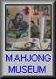

Golden site 黄金祭都
1996年くらい、インターネットにおける麻雀サイトは10くらいあると聞いた。それがなんと今では麻雀専門サイトだけでも３００以上オープンされているらしい。碁や将棋に較べて多いのか少ないのか知らないけれど、いずれにしてもご同慶の至り。
そんな数百のサイトの中から、ふだんσ(-_-)がよく訪問するサイト集を作ってみた。あくまでσ(-_-)本位のわがままサイト集なので、「なぜあのサイトが無い」とか、「どうしてこんなマイナーなサイトが」とか、疑問に思われることがあるかも知れない。その点は、あしからず。m(_ _)m
1
「雀のお宿」にはいくつものカテゴリーがある。その中に清一色の訓練のカテゴリーもあるが、「電戯」というカテゴリーネームが素晴らしい。
σ（-_-）が特に好きなのは「放談」、「創語」。その中のお気に入りは「カブる確率」、「出和了の逆襲」、「神様のゲーム」、「待ちの効率」、「役を志向する」、「嵐のポンチー」、「恥ずべきこと」、「初心者のための」、「黄金の一向聴」、「四枚使いの七対子」、「麻雀遺伝子」、「拝啓阿佐田哲也様」、「絶対雀感を探して」など。まさに麻雀サイト中の白眉と思う。(H113/06/14)
2 
英語サイトの北斗。個人レベルではおそらくアメリカ１のコレクション。
アメリカにおける麻雀普及の過程がアメリカ人の目から述べられたGameHistory。
Rolling20の時代の貴重な写真の数々がUPされているVintagePrints/Phots。
アメリカ最大の麻雀研究家、Robert F．Fosterの貴重な論考を読むことが出来るVintageArticleｓ。
いまでは入手不可能な英語貴重書の数々が紹介されているBooks（ホント、気が狂いそうになった(^-^；）。
また麻雀牌コレクションでは麻雀博物館でも所蔵していないような貴重品の数々が掲載されている。（H13/06/24）
3
世界版麻雀ウェブリングのページ。管理人はMartin Repというオランダ人。麻雀サイトが国別にリンクされている。言葉は分からなくても、片っ端からクリックしてみたが、ユニークなサイトばかりで面白かった。クリックした先のほとんどのサイトに、またリンク集がある。それをまたクリックしているうちに、途中で自分がどこにいるか分からなくなった。（笑）
日本関係では、sammaniax、麻雀国語辞典、東風荘、麻雀帝国、（株）三栄、Mahjong Materialなど８サイトがリンクされていた。（H13/08/05）
5
管理人はトム スローパーというアメリカ人。コンテンツは、FAQ１「基礎的な麻雀情報」からFAQ14「テーブル規則」まで非常に豊富。各国のルールについてのFAQ２「Witch Mahjong Rules」、英語文献リストのFAQ３「Books on Mahjongg」、ロゼッタストーンになぞらえた麻雀用語の話など非常に興味深い。
FAQ７「All about Tiles」では、骨董麻雀牌の紹介やら購入方法、その材質の見極め方から手入れの方法まで詳述されている。またFAQ11は、日本人とは異なる視点から麻雀の歴史について詳述されている。（H13/09/14）
7
囲碁将棋をはじめ、ボードゲーム、カードゲーム、ダイスゲームなど、さまざまなゲームの総合サイト。麻雀は、このサイトの１カテゴリー。しかしその麻雀カテゴリーが、非常に充実している。
注目は、「麻雀の歴史」、中国における歴史から、今日の日本麻雀に至るまでよくまとまっている。また中国編では麻雀の元になったゲームからいかに現在の麻雀が誕生したまでが。世界編では日本、欧米、そして現代中国の麻雀事情まで言及されていて興味深い。（H14/03/13）
9 らすかるの家
上記のcomjong．comとは違った切り口で、麻雀の数理的分析に迫ったサイト。麻雀の数学には、その有益な分析の数々が掲示されている。このサイトのもう一つの柱が、麻雀ルール大全集。全国各地の諸ルールを、統計的に比較分類してある。これは大変な労作。
今から20年ほど前、σ(-_-)も同じ様なことを試みたことがある。しかし当時は手作業の世界。途中でついにダウンした。それがこのように完成された姿を見て、大変嬉しく思った。（H15/03/22）
10 麻雀の未来
麻雀界といっても非常に狭いが、この麻雀業界日報は 多くの媒体から大小さまざまなネタを収集している。σ(-_-)も貴重なニュースソースとして、定期的な巡回を欠かせない。（H15/08/13）
サーバー移転に伴い、タイトルは「麻雀業界日報」から「麻雀の未来」に変更となっている。（05.06.26）
11
麻雀エンターテーメントの世界において、阿佐田哲也はそびえる巨峰。その阿佐田哲也の専門サイト。
緑を求めて何百里（思い出の場所探訪記）は面白かった。σ(-_-)も阿佐田哲也大神の碑までは行ったが、さすがに終焉の地（一関）やお墓までは行ったことはない。管理人の情熱には、恐れ入るばかり。
12 ひいいの
麻雀研究
豊富なコンテンツを誇る。アクセス数も現時点(H16.5/1)で40万超とおどろくばかり。第１部麻雀の知識では、なんといっても麻雀の雑学が面白い。
統計的なテーマの第２部手作り理論は、どのテーマも微に入り細に渡りで感心するばかり。内容もさることながら、その量に圧倒される。またこのサイトにリンクしている週刊あらまぁーというメルマガも、話題が豊富で読み応えがある。(H16.5.2)
13
ヘタな戦術書を100冊読むより、ためになる麻雀エッセイ。「麻雀狂時代」、「麻雀再開講座」、「麻雀の扉」の３部作からなる。
麻雀への思いを語る「麻雀狂時代」では、“幼稚なジャーナリズム”、“麻雀とは期待値感性の勝負”が面白かった。戦略論である「麻雀再開講座」“守りの章”の、「麻雀は変動相場制のゲーム」というくだりに“なるほろ、なるほろ”。思考解析編と言える「麻雀の扉」は前半、後半に分かれるが、σ(-_-)は前半部の“麻雀は判断のゲーム”が印象深かった。(H17.5.25)
14 麻雀の雀龍.com
デキのいい入門サイト、特にアガリ役を動画で紹介して
いる点が面白かった。 う〜ん、これは分かりやすい。
リンク集も豊富なので、しばらくアッチコッチ見て回った。(^-^)/